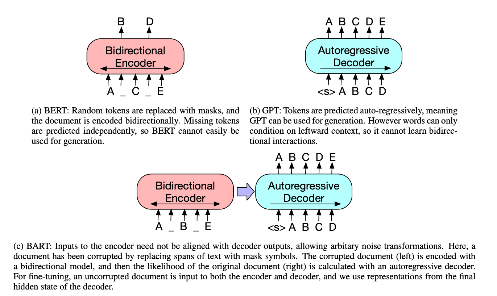

1. Read the title and make an opinion of what’s in the paper (e.g., the area, the task)
BART: Denoising Sequence-to-Sequence Pre-training for Natural Language Generation, Translation, and Comprehension
Year: end of 2019
BART is a bit strange because BART doesn’t stand for anything. So maybe they are just trying to position it near BERT. I think the key is how this pretraining task is a sequence to sequence task (as opposed to BERT’s MLM sequence task).
2. Read the abstract well and form a hypothesis of
- What’s new in the paper?
- Do you have a clear overview about what the paper is all about?
BART is trained by (1) corrupting text with an arbitrary noising function, and (2) learning a model to reconstruct the original text.
This looks like a pretty standard pretraining scheme. I assume that their noising function is what is unique in the paper.
We evaluate a number of noising approaches, finding the best performance by both randomly shuffling the order of the original sentences and using a novel in-filling scheme, where spans of text are replaced with a single mask token.
This is actually really interesting, as a result, I’m curious as to what they find. ALBERT yesterday talked about how NSP is too easy of a task, where Sentence Order Prediction is important.
BART is particularly effective when fine tuned for text generation but also works well for comprehension tasks.
Text Generation is something I am not as familiar with, but I can see how having a good language model is important for this. And how sentence order is pertinent.
3. Look at the images and extract a set of “questions” about what is not clear about their method from the images. Now your job is to answer these questions by reading the paper.
Ahh, a paper with an excellent image!

This is very easy to understand how they differ from popular LM’s. I am not sure if the purple arrow has any significant meaning, or it is just a change from how BERT decodes, which is not Autoregressive, but BERT does have a decoding step.
These augmentations are also easy to understand.

I wonder which ones proved successful?
4. Read the method aiming to answer your “questions” about the paper. Focus on understanding only the things relevant for the story (i.e., to understand the contribution).
In Section 4, the paper compares Pre-training objectives.
This table shows a few things:
- Different pretraining tasks provide significant variation.
- Token Masking is critical.
- Left-to-Right pretraining is good for generation.
- BART is strong in many areas.
5. Read the experiments to convince you that the show results are caused by their claim. Be aware that the experiments highlighted are the best scenarios and are fully hyper-parameter tuned.
BART seems to add marginal improvements over other models. However their system seems to be pretty robust. Perhaps the pretraining task does not matter quite as much as long as a sufficient task is chosen. That would explain in part some of the lifetime to BERT.
6. Make sure you answered all your questions. Did the authors convince you that their story has the effect that they claim?
I think I can take away from this paper a better understanding of different pretraining tasks, and a great appreciation for images diagramming the model, so it is much easier to understand.